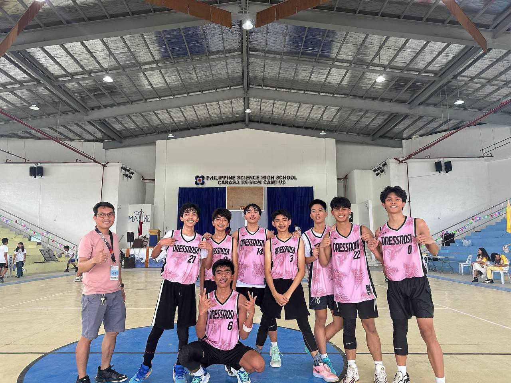
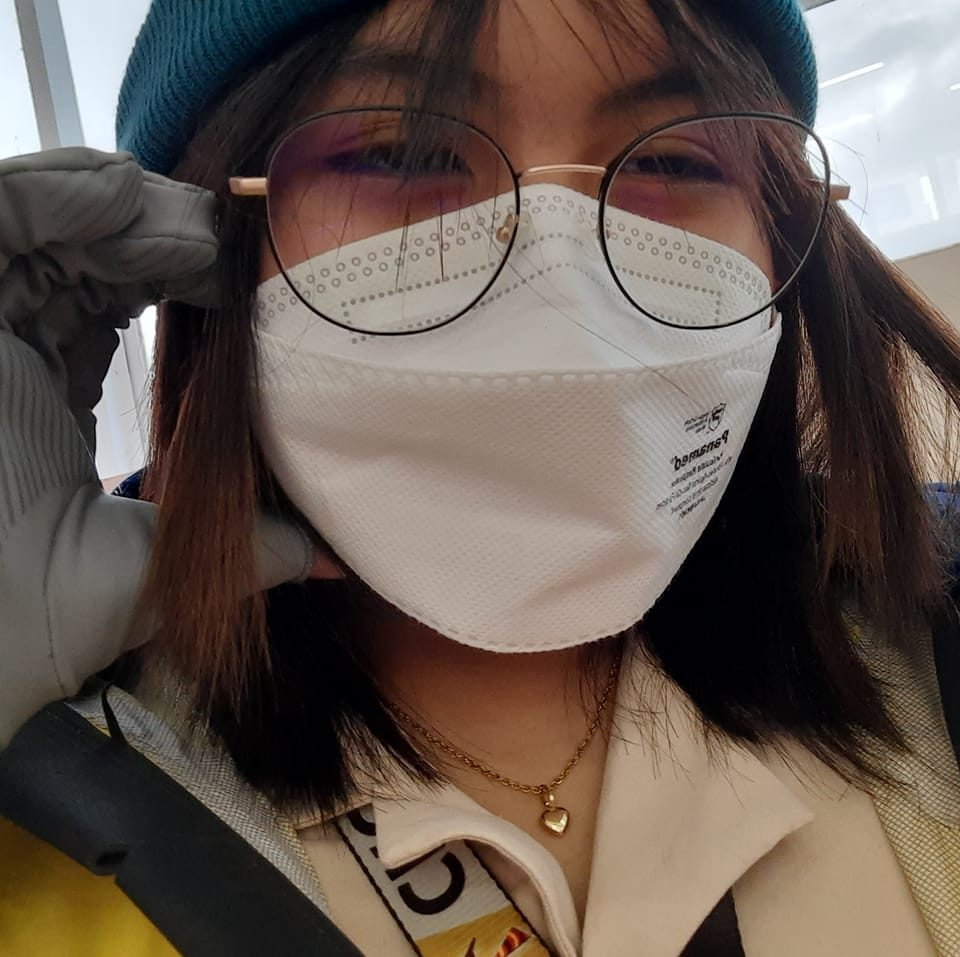

Integrity
Excellence
Service to the Nation
"How was Pisay?" is a question often asked by many people around me. Pisay may sound scary, but it's the best thing that has happened to me. Personally, my Pisay journey has been a rollercoaster ride, full of ups and downs. I've experienced the happiest moments, especially during events Pisay held, like field trips, STEM Fest, and the most chaotic yet fun events— Intramurals and Humanities Week. These events were so enjoyable, and I can't wait to experience them again next school year. Throughout my journey, I've met a lot of people who now hold a special place in my heart. These people have made my journey easier by helping me academically and being there during the toughest moments. My Pisay journey has helped me become the person I never expected to be. I've learned a lot on this journey, and though I know it's still far from over, it's all going to be worth it. Pisay has taught me many things, not just academically but also to be independent, especially since I'm living in the school dormitory. Thanks to Pisay for providing students who are far from the campus with a good dormitory. Despite experiencing some of the saddest moments in my life as a Pisayan, I can't deny that Pisay is very enjoyable. It has allowed me to meet wonderful people, very nice teachers, and the best dorm manager I never thought I would have. Being a Pisayan has also helped me become a better feature writer, and, after all, I got to be on the Editorial Board of the campus publication, The Thirteenth Scholar. Nevertheless, I'm very grateful to be a scholar at the Philippine Science High School Caraga Region Campus because of the privileges Pisay has given me. In the rollercoaster of life, Pisay has been my thrilling ride, teaching me to be the best version of myself. I've learned a lot on this journey, not just academically, but also in the important aspects of life that we should cherish every day. It's not just about grades—Pisay has taught me to enjoy the ride, make the most of each day, and appreciate the people around me. Not just for the lessons in class, but Pisay Caraga makes my life a whole lot more fun and meaningful!
Every time people ask me about what school I study at, and answer "Pisay", the thing that always comes out of their mouths is, "Is it hard?", "You must be very stressed", "Is it fun?", etc. That's what people's impressions are when they hear the word "Pisay", but when I'm asked "How was Pisay?" my answer would be very far from what they think it is. Pisay is just like any other school you'd find, sometimes there'd be good times, and sometimes bad. Personally, as a kid who loves to have fun, a lot of the good moments that I've spent here in Pisay are hanging out with the friends that I've made throughout the school year, joining the events here such as Intramurals, STEM Fest, Year-end parties, and many more. And in every fun time, there'd also be bad times such as exams, quizzes, and assessments, but even with these "bad times" happiness still finds a way to make them enjoyable. Pisay has slowly helped me become a better version of myself, not just in academics but also in my personal life. As an athlete, musician, and artist, I can proudly say that Pisay has helped me improve my skills by giving activities and events such as STEM Fest and Intramurals, these events did not just give me the most enjoyable moments of my Pisay life but also improve my God-given skills and talents. So, when asked, "How was Pisay?" a part of me would say it is hard and another part of me would proudly say that Pisay is a school that doesn't just help you become a smart or a very intellectual person but it also helps you become a better version of yourself not just academically but also in every part of your life. For me, it did not just improve my academic skills but also improved my overall physical and mental capabilities.
Pisay was somewhat of an experience. Though there were ups and downs, I would say that going through those were the reason why I’ve grown to become fond of them. From battling exams to enjoying intramurals, it truly has been such an experience. Despite my introverted nature, I’ve met people who I consider as lovely people, as well as my friends. The constant support happening inside the classroom and within the batch is commendable as we work as one, especially during events like Intramurals and STEM Fest. Being in Pisay has been the reason why I strive to achieve my goals. It reminds me of what I should work for in the future, and to be trained this way helps me figure out what goal I should go for as I continue to learn and grow. As someone whose interest is piqued in the subject of Science especially in Biology and Chemistry, it amazes me how there are so many opportunities for me to learn more about the said subjects. What amazes me more in Pisay is how they always try to help students in need regarding their academic abilities. If they are doing badly in a subject, teachers are always there to help them whether it be through consultations or questions held after lessons. I personally find that helpful as someone who constantly needs a question or two to further digest the lessons taught by the teachers. Overall, I find my experience in Pisay as something I cannot explain in words. It is something that is to be experienced yourself as storytelling might lead you to different paths. However, I would definitely say that it helped me reach my goals and learn how to achieve it.